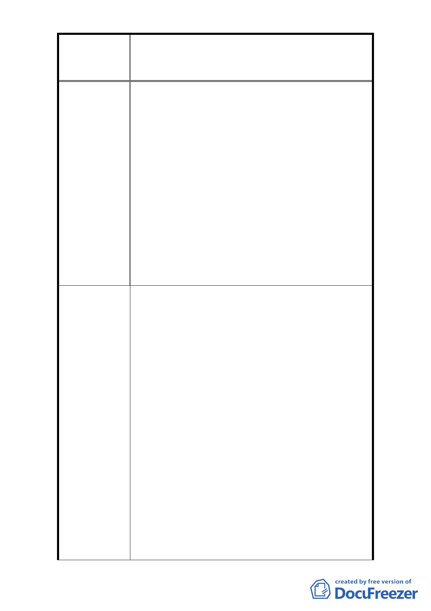

修訂臺北市大安區青田街保存區聚落風貌保存專用區細部計
案
名
畫、變更部分第三種住宅區、第三種商業區(特)為第三種住宅區
(特)(日式宿舍)及第三種商業區(特)(日式宿舍)暨劃定週邊地
區都市設計管制細部計畫案
不是「人治」社會，政府機關須依法制訂及執行政
策，以保障人民基本權利。
(2) 取消毗鄰 26 棟日式宿舍之建築基地須留設側院之
規定，回歸據依「臺北市土地使用分區管制自治條
例」第 16 條辦理。
(3) 據依「文化資產保存法」之文化資產定義，重劃計
畫範圍：
A.「古蹟」及「歷史建築」等 2 類別，重新研議細
部計畫之計畫範圍。
B.對目前僅存 21 棟日式宿舍進行價值鑑定，將資格
符合者，提升為「歷史建築」，再行劃定細部計
畫之計畫範圍。
C. 俟修法完成定義「日式宿舍」，經價值鑑定程序
後，再行納入細部計畫之計畫範圍。
1. 龍安里青田社區發展協會向本府申請指定該區 35
處日式宿舍為古蹟，以整體保存本區日式宿舍群落
風貌。本府文化局業於 93 年起依文資法及相關法
令邀請文資委員進行本區域之文資價值鑑定，並於
95、 96 年公告 4 處古蹟、7 處歷史建築。
2. 日式宿舍納入細部計畫內則是在本市都市計畫委
員會於 96 年 2 月 13 日第 565 次委員會議中決議：
「為形塑整體街區保存與維護土地權利關係人權
益，本計畫案管制區內除以指定古蹟、已登錄歷史
建築外，增加日式 1 類可適用內政部頒訂都市計畫
市 府 回 覆 意 見 容積移轉辦法」而將不具文資價值身分之日式宿舍
納入都市計畫管制範圍加以管制。
3. 故青田街細部計畫範圍內之日式宿舍雖不受文化
資產保存法的管理，但是仍受到 96 年 8 月 9 日公
告之「修訂臺北市大安區青田街保存區聚落風貌保
存專用區細部計畫、變更部分第三種住宅區、第三
種商業區(特)為第住宅區(特)(日式宿舍)及第三
種商業區(特)(日式宿舍)暨劃定週邊地區都市設
計管制細部計畫案」之規範。細部計畫內針對日式
宿舍之保存與修復原則以及容積移轉機制均已詳
加規定。目前大稻埕歷史風貌專用特定區之歷史性
- 23 -